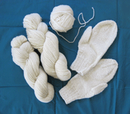

| Wool is an amazing fiber! Wool provides the most warmth with the least weight. • Keeps you warm, even when it is wet. • Absorbs water vapor, but repels water. • Wool can hold 30% of its weight in moisture and not feel damp. • Insulates against colder or hotter air. • Fiber crimp gives fabric greater bulk, and holds air, so the fabric retains heat. It impedes heat transfer, so is a good insulator fabric. Wool is durable Wool is soil resistant Wool is not flammable. |
||||||||||||||
| The dark yarn in this sweater was hand spun and knit from one of my fleeces by a friend. | ||||||||||||||
|  | ||||||||||||||
| Yarn spun and knit from my fleeces. | ||||||||||||||
|
The fleece on the center back of three different sheep.
|
||||||||||||||
| New born lambs I would worry about ewes birthing in very cold spring weather, especially at night, and the wet lambs getting cold, hyperthermic and dying. Then I realized… lambs are born with “beautiful thick wool coats” which keep them warm even when they are wet! |
||||||||||||||
| Left is outside, lower right is cut sheared side of fleece. | ||||||||||||||